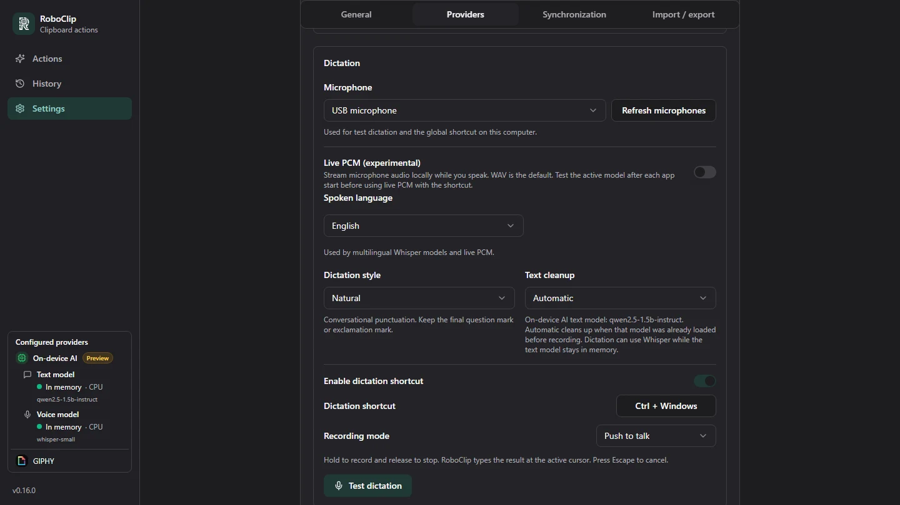

Windows preview
Dictate into your current app
RoboClip transcribes your speech on your computer and types the result at the active cursor.
Set up and test dictation
- Open Settings → Providers → Voice, find a speech model, and download one.
- Choose a Microphone. Windows default follows your system input. If you reconnect a microphone, select Refresh microphones.
- Choose your spoken language and select Test dictation. Review the transcript in Voice before using the shortcut in another app.

Microphone selection is available in RoboClip 0.16.0 and later. Your choice stays on this computer. Microsoft Store updates follow certification.
Use the global shortcut
Choose push to talk or press once to start and again to stop. Place your cursor where the transcript should go, then use the shortcut shown in Voice settings.
- A microphone shows that RoboClip is listening.
- A document shows that it is transcribing.
- A pencil shows when the On-device AI text model is improving the transcript.
The icons remain visible when Windows animations are disabled. To control whether RoboClip improves the transcript, use the cleanup setting in Voice.